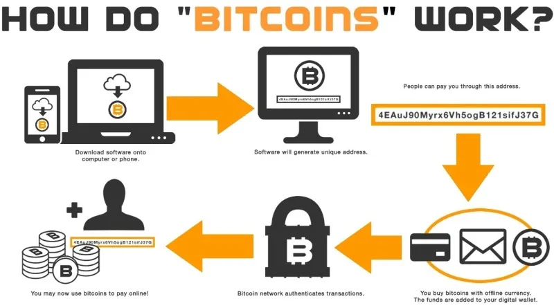

Future
Cryptocurrency
Cryptocurrency is a digital or virtual form of currency that uses cryptography for security. Unlike traditional currencies issued by governments, cryptocurrencies operate on decentralized networks called blockchains.
Computers have devloped at an incredible rate and as technology continues to grow, it will become faster, more secure, more integrated, and more people will adopt it as it becomes increasingly user friendly.
Blockchain
Cryptocurrencies rely on blockchain technology, which is a distributed ledger that records all transactions across a network of computers. Each transaction is grouped into a "block" and added to a chain of previous blocks, creating a permanent and transparent record.
Mining
Mining is the process by which new cryptocurrency coins are created and transactions are confirmed. Miners use powerful computers to solve mathematical problems, and the first miner to solve the puzzle adds the next block to the blockchain.
Decentralization
Cryptocurrencies are decentralized, meaning they are not controlled by a central authority like a government or bank. The distributed nature of blockchain ensures that no single entity has complete control over the network, making it more secure and resistant to hacking or fraud.
Many cryptocurrencies have gain popularity because they can be used as a medium of exchange, investment asset, and there is no need for intermediaries.
Digital Wallets
To hold and manage cryptocurrencies, users need a digital wallet. A wallet consists of a public key (similar to a bank account number) and a private key (like a password). The public key is used to receive funds, while the private key is required to access and transfer the funds.
There are many different types of cryptocurrencies that can be held in a digital wallet:
- Bitcoin
- Ethereum
- Litecoin
- Cardano
- Solana
- Dogecoin
- Many more